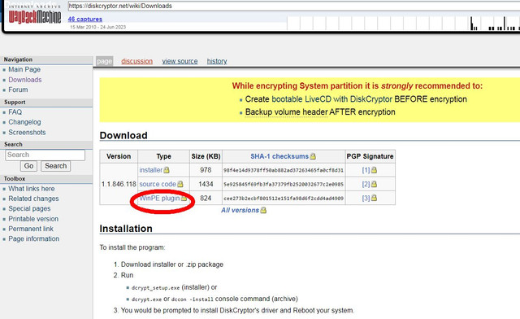
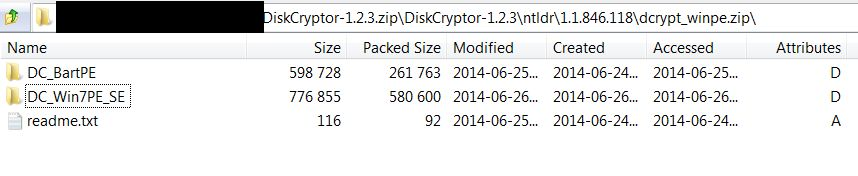
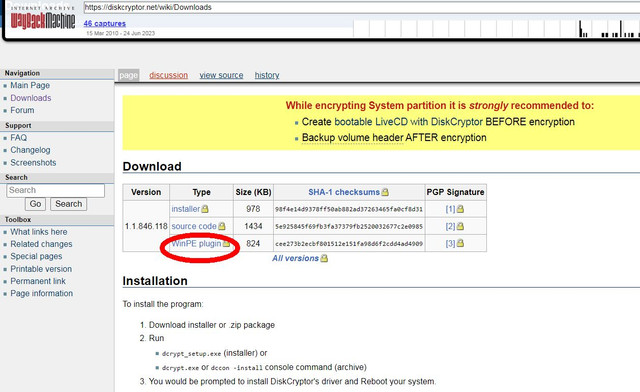
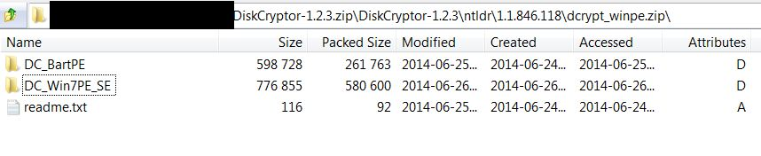

Windows 10 update broke DC bootloader
Windows 10 update broke DC bootloader
Recently installed a Windows update, then the computer did not boot again. Windows tried to attempt repairs, but no luck! Had to re-install Windows.
Re: Windows 10 update broke DC bootloader
I bought a new SSD and installed a fresh copy of Windows 10 on it and spent hours putting my backed up files back on it. Now after installing Diskcryptor it asked me to reboot the system after installation had finished and now it doesn't.boot up anymore. I'm gutted
There.must be another way to get it to boot again without having to reinstall windows?
There.must be another way to get it to boot again without having to reinstall windows?
Re: Windows 10 update broke DC bootloader
I bought a new SSD and installed a fresh copy of Windows 10 on it and spent hours putting my backed up files on it. Then I installed Diskcryptor and after the installation finished it asked me to reboot the system, and after restarting it doesn't boot up anymore, it says there's no media present and the drive doesn't show up under UEFI in the BIOS. Secure boot is off.
I really don't want to reinstall windows again. Is there any way that I can get it to boot up?
I really don't want to reinstall windows again. Is there any way that I can get it to boot up?
-
goldengate2032
- Posts: 3
- Joined: Sun Aug 01, 2021 1:15 am
Re: Windows 10 update broke DC bootloader
Will setting a BIOS password prevent the Windows update from changing the boot order?
-
DavidXanatos

- Posts: 339
- Joined: Fri Mar 19, 2021 11:26 am
Re: Windows 10 update broke DC bootloader
create a live windows boot usb drive using rufus with DC on it and inspect the problematic instalation is the efi bootloader installed etc
Re: Windows 10 update broke DC bootloader
How does one put DC on a live USB drive? I can't seem to find a portable version download, only setup. Let's say I'm in trouble and don't have access to my encrypted drive where DC is installed - where can I get the DC files to put them on live USB?DavidXanatos wrote: ↑Sat Aug 14, 2021 9:02 amcreate a live windows boot usb drive using rufus with DC on it and inspect the problematic instalation is the efi bootloader installed etc
And one more question, is it possible to decrypt system drive (or any other drive) by booting into foreign system where DC is already installed?
Thanks.

Re: Windows 10 update broke DC bootloader
Disclaimer:
My info is based on "OG" DiskCryptor by ntldr, so YMMV.
1. Windows .iso (download from MS).
2. DC "binaries" (yeah, you probably gonna have a biiig problem there...).
3. Software than will make you a bootable Live Windows media, with DC integrated into it (back in the days, Win7PE was popular).
4. Bootable pendrive maker (Rufus is still good I think).
In "good, old days", it was right there in the downloads page:

Though the OG ones (pre v1.2),are still in the source code for current DiskCryptor, that's available via GithHub:

My info is based on "OG" DiskCryptor by ntldr, so YMMV.
You need:
1. Windows .iso (download from MS).
2. DC "binaries" (yeah, you probably gonna have a biiig problem there...).
3. Software than will make you a bootable Live Windows media, with DC integrated into it (back in the days, Win7PE was popular).
4. Bootable pendrive maker (Rufus is still good I think).
Yeah, problem as old as DC itself...
That's the question for the current author.
In "good, old days", it was right there in the downloads page:

Though the OG ones (pre v1.2),are still in the source code for current DiskCryptor, that's available via GithHub:

To decrypt, you only need DiskCryptor and credentials used for encryption. So yeah, you could yank out your disc, and go to some friendly (middle-aged) IT guy, to decrypt it.